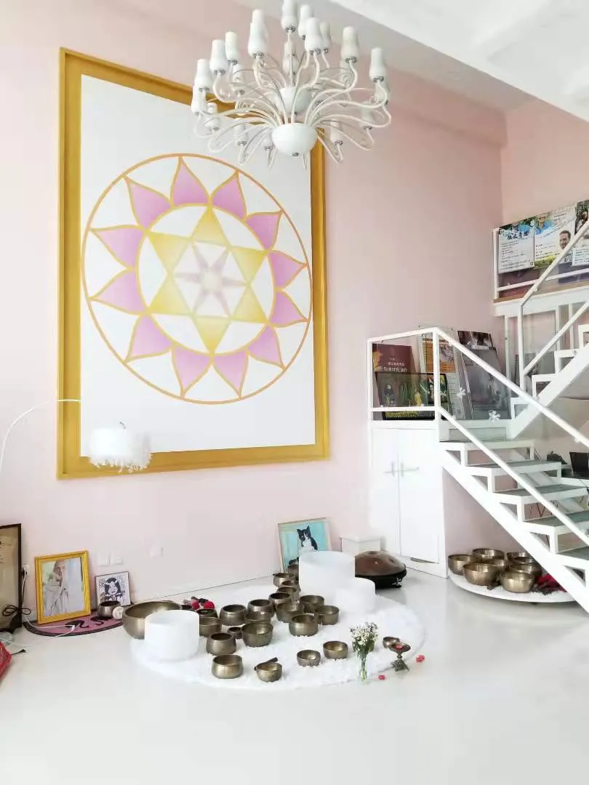
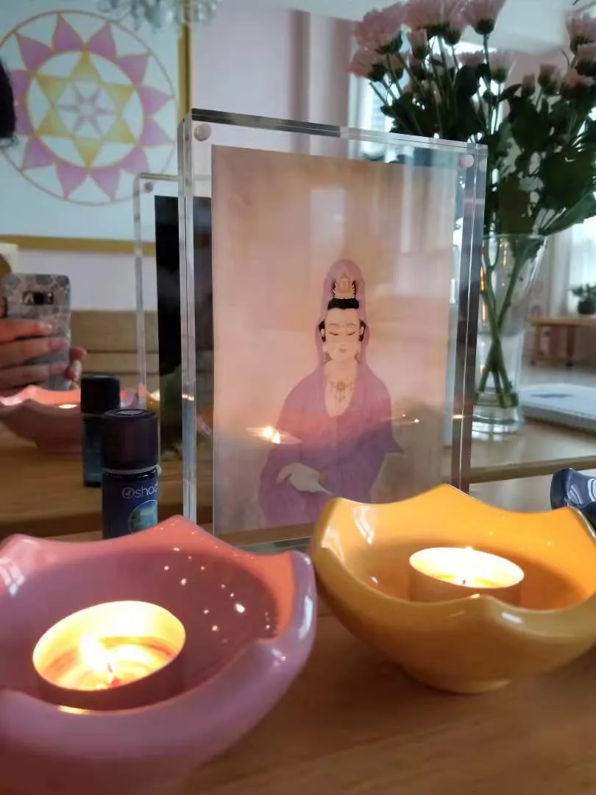
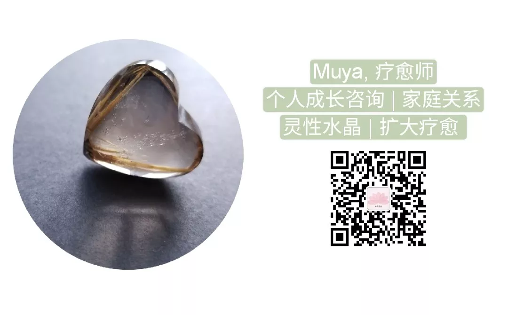

Muya | 第一次的扩大疗愈工作坊分享
Muya 南园晶舍[南园晶舍](http://weixin.qq.com/r/Cz8XEwzEgMT8KUhwb2qP)
| 微信号 | gh_512c07fa4640 |
| 功能介绍 | 为大地母亲祈祷 |
2021-09-16 01:44
原文链接(长) 原文链接(短)

图文 \| Muya
刚刚过去的这个周末，我完成了第一次的扩大疗愈一阶工作坊，有五位学员接受了扩疗之光的点化，成为具格的扩大疗愈师。整个过程非常美好，充满了难以言喻的殊胜体验，远远超出了我头脑的想象。
我想首先将感谢之情送给Halo疗愈空间——很意外能找到如此宽阔明亮、气场洁净的教室。在我第一次去探寻场地时就感受到了喜悦。这是一间以颂钵音疗为主的教室，摆了大大小小上百个颂钵。前两年我上过颂钵疗愈师Doris的课程，也对颂钵很感兴趣。我随手拿起一个颂钵敲了一下，很完美的音波，像光形成的露珠在荷叶上跳动（这个颂钵名为“金光”）。这里的主持人光雨向我介绍，这些都是来自尼泊尔的手工颂钵，每一个都有几十到上百年历史，有些是修行者曾经使用过的。后来在课程中，我借用了空间里的一个颂钵作为定场的辅导，发现这个颂钵恰好名为“观音”——扩大疗愈课程正是由观世音菩萨接引与护持的。
我相信每个疗愈师或修行者，都有自己最具缘的通道，这关乎每个人的天赋道路与灵魂本质，就如同有人成为虔诚的佛教徒，有人成为基督徒。我学习过各种各样的疗愈方法，每一种都有其独特和不可取代性。在我第一次听闻好友介绍扩大疗愈时，我知道它对于我是不同的，我就像佛经中所言，“顿生猛厉信心”。于是我开始学习和练习扩疗，差不多已近两年时光。但教授扩疗并点化他人，仍然是一个非常特别的体验。甚至可以说这是我一生中到目前为止，最殊胜的时刻。
课程共两天，大部分时间，我们都在练习扩大疗愈的运作流程，以确保学员在课中对整个疗愈过程有清楚的认知。然后，在第二天课程的最后，我为学员做点化——以观世音菩萨的神圣加持，为其眉心轮涂上薰衣草精油，宣布其成为具格的扩大疗愈师。在扩疗被接引和传导之初（1983年），就包含了一个确凿信息，即在每一次点化中，都会有观世音菩萨的临在加持。换言之，导师在那个时刻会成为一个管道。
第二天接近傍晚时，天色已经暗下来，我们围坐在圣坛前开始做点化。每一位学员依次上前，在简短的神圣话语肯定下，为其涂油并宣布她成为扩大疗愈的神圣管道。当时在圣坛前点燃着三圣火焰的蜡烛，粉色、黄色与蓝色，除此外，光线很昏暗。意识到这个时刻是神圣的，所有人都保持着静默，并在静默中完成全部仪式。

在那个当下，我有非常强烈的感觉，觉知到整个空间充溢了白色的明光，却不是肉眼可见的光。这层光更是形成了一件如同光之圣衣般的保护，笼罩着我。我感受到轻微的晕眩。接着，我和已经完成点化的学员们一起，再将整个疗愈过程做一遍，课程就结束了。我们收拾好，下楼去一家餐厅吃饭。这两天里我们都在这里吃饭，是比较噪杂的饭店，也不是很干净。但奇妙的是，我感觉到自己变得非常洁净，周遭的一切都被这层光衣隔绝，而不能沾染我。一位学员说她也是，感觉变得干净，成为新的自己。我们就在这种带有晕眩的白光里道别。
第二天起床后，我和伴侣去附近吃饭，庆祝课程的顺利结束。我发现这层白光依然完整地覆盖着我，并且从内在升起了一些全新的感受——在点化仪式之前我曾经担忧、烦恼、厌恶的诸多问题，那些令我感受沉重沮丧的限制性的观念，一些“向下沉坠”的能量，在今天，当下的时刻，我感受到它们静止了。此刻在心中感受到的是宁静空无，念头变得很少。像最晴朗清澈的天空，没有云，只有清冽的阳光。这个感受令我震荡，我清晰地感觉到这是会产生质变的光，尽管它可能是暂时的（我想也许会维持一两天，不过我很快就知道那是多久了）。
我和好友Sky分享这个变化，她说从她的第三眼观看（Sky有很强的灵视），能清晰看到我被一层很厚的白光笼罩，明亮而温柔。我说：不知道能维持多久。很快我们就知道答案了——非常精确地，这层白光圣衣维持了24个小时，与扩大疗愈每启动一次能维持的时间一样。到了昨天点化的那个时间，我又再清晰地感受到这层圣衣从我周遭缓慢消退了。我开始重新感知到周围环境中那些“向下沉坠”的能量。不过，我仍然感觉内心保有了一个空间，避免自己与之缠绕。那份光消退了，而它带给我的，似乎留在了心中。
感恩万有对我们的支持。希望未来有更多的机会去传播扩大疗愈，种下更多的种子。
感恩教授与点化我的Nelly老师。

\* 本图片来自扩大疗愈官方网站
摘录了学员在课程最后做的分享，是点化时的感受与点化完成后再次做自我疗愈的感受。
学员靖：开始看别人被点化的时候就觉得空间好像比之前更亮了一些，不太确定，感觉不太像人界的光在照着，不是实体的亮度。我自己被做的时候，有一瞬间觉得有听到重叠的声音，有两个声音在同时说话。但不是全程，是其中一段，就是老师准备给我涂薰衣草精油之前，我能听到是两个声音在说话，这很神奇，当时感觉很震撼。我听不出来是男声女声，就是有一个旷古久远的声音，很神奇。（点化后再做疗愈）首先它比之前的几次都要热，之前已经很热了，但还是身体体感上热而已，这次是蒸得大汗淋漓，像蒸桑拿，但并不累。另外能清晰地感觉到扩疗力量比之前大，而且不是大了几倍，是至少十倍那种级别。另外，之前做还是会有“我在做”这个意识，点化完的这次就不太有了。
学员晴：我在接收点化的时候，会观想到观音大士她身穿白色衣服，整个空间洒下白色光，就是这样的感受。点化完了人很清明，过程中其实也没有激动的状态，就一直很平和，很有爱。（点化后再做疗愈）做的时候感觉这次特别轻松流畅，在一些环节比如清理灵魂这里，没有那么大的痛感了。
学员洁：我好像看到了观音的净瓶，白色的，但没有看到形象。我看到了净瓶插着柳条，然后还有一些紫色光，在从天上往下洒。感觉整个过程内心觉得很平静，而且很幸福。（点化后再做疗愈）我是觉得身体的敏锐度、精密度提升了，能感觉到很多之前感觉不到的细微处。身体某个地方突然动了，或者某个能量在动、在清理的感觉。原来只能感觉很大块的，现在能感觉很细微的。
学员琳：我没有刻意去观想画面，也没有看到奇特的画面，但是我的感觉是，我在另外一个时空里，这个时空满溢薰衣草的花香，它就是紫色的。也没有其他东西，就是纯净的结界。从仪式开始我就感觉进入了这个结界，是另外的时空。做完就觉得我升级了，我又回到了地球继续玩。（点化后再做疗愈）大多数感觉跟大家相似，会感觉顺畅了很多。然后我之前做业力清理的部分，本身就已经有很明显的温度升高，这次做就是燥热，有一团火在烧，特别强烈，真的很热。
学员卡：我觉得很神圣，感受上很震撼，有比较明显的感觉，描述不清楚，就是被“触”了一下。（点化后再做疗愈）觉得比之前热，手更热一点，如果贴着自己，给自己做，会变得舒服了一些。
